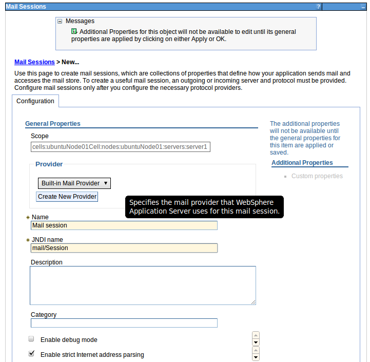
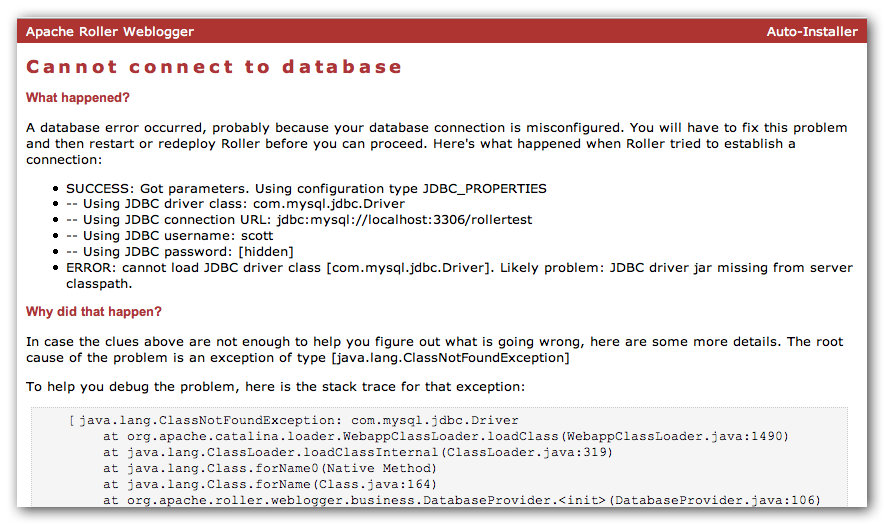

Next, you will see the Add a New Web Application (WAR) page.
Installation Guide
Apache Roller Weblogger
Version 5.0.1
June 2012
Table of Contents
1 Overview 4
1.1 Copyright and trademark information 4
1.2 Feedback 4
1.3 Acknowledgments 4
1.4 Modifications and Updates 4
2 Securing Roller 5
3 Ready to roll? 6
4 Download and un-package Roller 7
4.1 Installation directory layout 7
5 Prepare your database for Roller 8
5.1 Create a database for Roller 8
5.2 MySQL and Oracle considerations 8
6 Create Roller configuration file 9
7 Deploy Roller to Tomcat 10
7.1 Tomcat: Add to Roller Configuration 10
7.2 Tomcat: Add JDBC Driver and JavaMail API Files 10
7.3 Tomcat: Set URI Encoding 11
7.4 Tomcat: Deploy Roller 11
8 Deploying Roller to Glassfish 12
8.1 Glassfish: Add Roller Configuration 12
8.2 Glassfish: Add JDBC Driver File(s) 12
8.3 Glassfish: Create Datasource 12
8.4 Glassfish: Create Mail Connection 19
8.5 Glassfish: Deploy Roller 20
9 Deploying Roller to JBoss 23
9.1 JBoss: Create Roller configuration 23
9.2 JBoss: Add JDBC driver file(s) 23
9.3 JBoss: Create Datasource 23
9.4 JBoss: Deploy Roller 30
10 Deploying Roller to WebSphere 32
10.1 WebSphere: Add Roller Configuration 32
10.2 Special configuration for Apache Commons logging 37
10.3 WebSphere: Set Filter Compatibility 38
10.4 WebSphere: Add JDBC Provider User 39
10.5 WebSphere: Add JDBC Provider 40
10.6 WebSphere: Add JDBC Datasource 42
10.7 WebSphere: Create Mail Connection 44
10.8 WebSphere: Deploy Roller 46
11 Getting started with Roller 48
11.1 Navigate to Roller and finish the install 48
11.2 Register a user and create a weblog 49
12 Configuration tips and tricks 51
12.1 Setting up Roller's Planet feed aggregator 51
12.2 Using Server-provided database and mail resources 53
12.3 Manual table creation and upgrade 54
13 Upgrading Roller 55
13.1 Backup your old Roller 55
13.2 Install and startup the new Roller 56
14 roller.properties 57
This document describes how to install the Apache Roller Weblogger software. It explains what you need to install first, how to download Roller, how to configure Roller and how to install it to your existing Java application server and relational database. If also offers a 5-minute install option for more advanced folks.
The contents of this document are subject to the terms of the Apache Software License.
All trademarks within this document belong to legitimate owners.
Please direct any comments or suggestions about this document to the Roller User Mailing list. For more information on the Roller mailing lists please refer to the following page:
Roller Mailing Lists - https://cwiki.apache.org/confluence/x/ZYk
The original version of this document was written by Dave Johnson. The document is currently written and updated by the Apache Roller project of the Apache Software Foundation.
The general format of this document was based on the documentation template used by the OpenDS project which in turn was based on the templates used by the OpenOffice.org project.
|
Date |
Description of Change |
|---|---|
|
May 2012 |
Added note to the Securing Roller section and the configuration property weblogAdminsUntrusted |
|
December 2010 |
Update for Java EE 6 application servers JBoss AS 6.0, Glassfish 3.2, WebSphere and Tomcat+JPA |
|
October 2009 |
Updated for Roller 5.0, note about upgrading file uploads to new media blogging system in Section 10. |
|
July 2007 |
Rewritten for simplified Roller 4.0 installation process |
Security should be top-of-mind when setting up any web site, even one that is on a private network and internal to your organization. Here are some recommendations for keeping your Roller installation secure:
Perform Roller installation on a secure network. When you are installing Roller it is possible for other users to interfere with your installation. If other users have access to the server, one of them could create the admin account before you do. So, when you install Roller, do so on a server that cannot be accessed by others.
Do not allow open registration of new users. Roller can offer a registration link so that new users can register themselves, but this feature is turned off because it is not safe to allow just anybody to register for an account on your blog server. If you want to turn it on, login as an administrative user, go to Roller's Server Administration page and enable the Allow New Users option.
Enable HTML Sanitization. If you cannot trust the webloggers who will use your Roller site to author HTML, then you should configure Roller to sanitize all HTML published by the system. Do this by setting the weblogAdminsUntrusted=true property in your roller-custom.properties file.
Do not allow HTML in comments. Roller can allow users to write comments in a safe-subset of HTML, but HTML use in comments is not allowed at all because of security concerns with even a so called safe-subset of HTML. If you want to turn it on, login as an administrative user, go to Roller's Server Administration page, enable the Allow html in comments option and make sure the HTML Subset Restriction box is checked.
Run Roller over SSL connection. If you run Roller over a plain old HTTP connection, it is possible for others to snoop your password when you login, for example over an open WIFI network. Instead, you should consult your Java Application Server's documentation and configure your Roller installation to run via HTTPS only.
First, let's make sure you have everything you need to install and run Roller.
Roller is a database-driven Java web application. To run it you need Java, a Java Servlet container such as Tomcat, a connection to a database such as MySQL and optionally a connect to a mail server. More specifically, here's what you need to install and run Roller:
Java Development Kit, specifically the Sun Java 2 SE 1.6 JDK. The computer on which you install Roller should be configured to run with the Java SE 6.
Java EE 6 Application Server, or more specifically a Servlet container that supports at least the Servlet 2.4 API. Hereinafter, we'll just call this your server. Roller has traditionally worked best on Tomcat and Tomcat only, but Roller 5.0 is known to run on:
Tomcat 6 and 7
Glassfish 3
JBoss AS 6
WebSphere 8 (beta)
Relational database such as MySQL or Apache Derby. Roller stores blog entries, comments, bookmarks and almost all other data in a relational database accessed via the Java Persistence API 2,0. MySQL and Derby are best supported but Roller also includes database creation scripts for DB2, HSQL-DB, Microsoft SQL Server, Oracle and PostgreSQL.
(Optional) An SMTP mail server. Roller can send email notifications for comments and other events via the JavaMail and Activation APIs.
Roller installation file. The Roller installation file contains the Roller WAR file, ready to reploy to your server, plus Roller license files, README and documentation.
For Tomcat 6 or 7 (and possibly old Java EE 4 and 5 app servers?)
roller-5.0.0-for-tomcat.zip
roller-5.0.0-for-tomcat.tar.gz
For Glassfish 3, WebSphere 8 or other Java EE 6 server
roller-5.0.0-for-javaee.zip
roller-5.0.0-for-javaee.tar.gz
For Jboss AS 6:
roller-5.0.0-for-jboss.zip
roller-5.0.0-for-jboss.tar.gz
We'll start by unpacking the Roller installation file.
Download the Apache Roller release file from http://roller.apache.org. If you're a Windows user download the .zip file and use your favorite ZIP program to unzip the release into a directory on your computer's disk. Unix users can download the .tar.gz file and use GNU tar to un-package.
Once you've unpackaged the files you'll find a directory structure like this:
README.txt
LICENSE.txt
NOTICE.txt
docs/
roller-install-guide.pdf
roller-user-guide.pdf
roller-template-guide.pdf
webapp/
roller-5.0.0-XXX.jar
The string XXX could be 'javaee' or 'tomcat' or 'jboss' depending on which Roller 5 release you downloaded.
The LICENCE.txt and NOTICE.txt files contain the Apache Software License and other legal notices related to the release. The README.txt file just points to the documentation in the docs directory.
Before you can install Roller you'll probably need to some work to prepare your database for Roller. You'll need a place to put the Roller tables; some call this a table-space and we refer to it as a database in this installation guide. You'll need to create a database for Roller, or get your database administrator to do it for you. You also need to have a JDBC driver for your database of choice, but we'll cover that later.
If you're luck enough to have your own database administrator, ask them to setup a database for Roller. When they are done, ask them to provide you with this information, you'll need it later:
Username and password for connecting to database
JDBC connection URL for database
JDBC driver class name
If you don't have a database administrator then you'll have to refer to the documentation for your database and do it yourself. You need to create a database for Roller, protected by username and password. For example, if you're using MySQL you might do something like this:
% mysql -u root -p password: ***** mysql> create database rollerdb; mysql> grant all on rollerdb.* to scott@'%' identified by 'tiger'; mysql> grant all on rollerdb.* to scott@localhost identified by 'tiger';
Based on our experience supporting MySQL, we have the following recommendations:
For MySQL, make sure that TCP/IP networking is enabled.
For MySQL 4.1.x use the J/Connector 3.0.X JDBC drivers instead of the newer 3.1.X series.
For MySQL 5.X use the J/Connector 3.1.X JDBC drivers instead of the newer 3.1.X series.
Make sure you enable MySQL's
UTF-8 support. See this page for
details:
http://rollerweblogger.org/wiki/Wiki.jsp?page=SetupUTF8onMySQL
For Oracle users, use the 10g (10.1.0.2 higher) drivers which should be packaged as ojdbc14.jar, even if operating on Oracle 9 server.
See the server specific sections to information on where to place the JDBC driver jars.
For most settings, Roller can be configured from its own web console. But for some startup-properties and advanced configuration options you must set properties in an override file called:
roller-custom.properties
That is a simple Java properties file, a text file that overrides settings defined in Roller's internal roller.properties file. To configure Roller you look at Roller's internal properties file, decide which properties you need to override and then set those in your roller-custom.properties file.
You can find the full text of Roller's internal roller.properties file in Section 11 and we encourage you to read it over, but we'll get you started right here and now with a simple example that shows you the bare minimum database configuration settings that you need to run Roller.
Create a text file named roller-custom.properties with the content below, but replacing the bold text the settings appropriate for your database and mail server.
installation.type=auto mediafiles.storage.dir=/usr/local/rollerdata/mediafiles search.index.dir=/usr/local/rollerdata/searchindex log4j.appender.roller.File=/usr/local/rollerdata/roller.log
The installation.type=auto property tells Roller to operate in automatic installation mode. In this mode Roller will provide very detailed error output to help you debug database connection problems. If Roller finds that the database exists but its tables are not, it will offer to run the database creation scripts. If find finds that the tables are there, but they are not up-to-date Roller will offer to upgrade them for you. Once your Roller installation is complete and you are ready to go “live” then you should set installation.type=manual.
Deploying Roller to Tomcat involves creating a Roller configuration file, adding some jars to Tomcat and then deploying the Roller WAR file.
You are expected to install and configure Apache Tomcat before you attempt to install Roller. Refer to the Tomcat documentation linked from this page for more information: http://tomcat.apache.org
There are a variety of ways to configure Roller and Tomcat and here we'll explain the easiest route: providing database and mail connection information directly to Roller via the Roller configuration file.
Create the Configuration File
Start by creating a Roller configuration file as described in Section 5. Next, choose database configuration type 'jdbc' and provide all require database connection properties. Also, choose mail configuration type 'properties' and define all require mail server properties.
For example, here is an example roller-custom.properties file that shows how to setup a MySQL connection. It shows the MySQL JDBC driver class name, an example MySQL connection URL and username/password settings for the mail connection:
Example: roller-custom.properties file
installation.type=auto database.configurationType=jdbc database.jdbc.driverClass=com.mysql.jdbc.Driver database.jdbc.connectionURL=jdbc:mysql://localhost:3306/rollerdb?autoReconnect=true&useUnicode=true&characterEncoding=utf-8&mysqlEncoding=utf8 database.jdbc.username=scott database.jdbc.password=tiger mail.configurationType=properties mail.hostname=smtp-server.example.com mail.username=scott mail.password=tiger
Add Configuration file to Tomcat
Place the configuration file into the Tomcat lib directory so that it is on the Tomcat classpath and therefore, made available to Roller. Next, we'll add the JARs Roller needs to Tomcat.
You will also need to place some additional jars in the Tomcat lib directory:
JDBC Driver Jars. Add the appropriate JDBC driver jars to the Tomcat classpath. Once they are in your classpath, Roller's database subsystem will be able to find and use them. Download them from your database vendor/provider and place them in Tomcat's lib directory.
Java Mail and Activation. Tomcat does not include the Java Mail and Activation jars. Even if you do not plan to use email features, you must download those jars and place them in Tomcat's classpath. Download them from Sun (http://java.sun.com/products/javamail) and place them in Tomcat's lib directory.
Roller supports internationalization (I18N), but on Tomcat some additional configuration is necessary. You must ensure that Tomcat's URI encoding is set to UTF-8. You can do this by editing the Tomcat configuration file conf/server.xml and adding URIEncoding=”UTF-8” to each connector element, as shown below:
<Connector port="8080" maxThreads="150" minSpareThreads="25" maxSpareThreads="75"
enableLookups="false" redirectPort="8443" debug="0" acceptCount="100"
connectionTimeout="20000" disableUploadTimeout="true" URIEncoding="UTF-8" />
And make sure you do this for every connector through which you use Roller. For example, if you use the AJP connector or HTTPS connector you need to add the URIEncoding="UTF-8" attribute to those connectors as well.
Refer to the Tomcat documentation for information on the various ways to deploy a WAR. One way to do this is to use the Tomcat Manager application, which you can reach at the following URL http://localhost:8080/manager. Once you are there, you'll see something like this:
On the manager screen above, scroll down until you see the Deploy section, see below:
Enter the context path at which you would like to see Roller, above we use /roller. Enter the full path to the Roller WAR file, in the webapps directory of the Roller installation and click Deploy to deploy Roller.
Finally, navigate to http://localhost:8080/roller to complete the installation.
Deploying Roller to Glassfish involves creating a Roller configuration file, adding some jars to Glassfish and then deploying the Roller WAR file. You are expected to install and configure Glassfish before you attempt to install Roller. Refer to the Glassfish documentation linked from this page for more information: http://...
Create a roller-custom.properties Roller configuration file as described in Section 5. No additional settings are needed for Glassfish.
Place your configuration file into the lib directory of your Glassfish Domain directory, e.g. in domains/domain1/lib/classes
Add the appropriate JDBC driver jars to your Glassfish domain's classpath. Once they are in your classpath, Roller's database subsystem will be able to find and use them.
Download them from your database vendor/provider and place them into the lib directory of your Glassfish Domain directory, e.g. in domains/domain1/lib/ext
Next, you should start or restart Glassfish then use the Glassfish console at http://localhost:4848/
First, use the tree on the left to navigate to the JDBC Connection Pools page.
You can use the Derby Pool, if you want to use Glassfish's built-in Derby database. Or you can click the New button to create a new database connection pool to handle connections to your database.
If you create a new Connection Pool, here's what you'll see. To create a new pool you will need to provide at least the following information:
Refer to the Glassfish and your database vendor for information on how to configure your database via the Edit JDBC Connection Pool page shown above. At a minimum you will need to set these properties:
Driver Class: this is specific to your database's JDBC driver. Examples:
Derby's driver class is org.apache.derby.jdbc.ClientDriver
MySQL's driver class is com.mysql.jdbc.Driver
Connection URL: this is specific to your database installation. Examples:
Derby example: jdbc:derby://localhost:1527/rollerdb
MySQL example: jdbc:mysql://localhost:3306/rollerdb
Use the Additional Properties tab to enter the Connection URL and other properties.
Once you have configured your Datasource, click the Save button to complete the configuration.
You should then try the Ping button to test your new connection pool.
If the Ping test works, then you are ready to create a JNDI Resource to make the database connection pool available to Roller. Navigate to the JDBC Resources page.
On the JDBC Resources page, shown below, click the New... button to add a new resource. IMPORTANT NOTE: This is where you need to enter database connection information like the Database Connection URL, the database username and the database password. Refer to the Glassfish and your database vendor's documentation for information on how to do this. You may have to enter new properties (for URL, username and password) in the Advanced Properties section of the new resource that you create.
On the New JDBC Resource page, shown below, name your new resource jdbc/rollerdb and select the database pool name that you wish to use, e.g. the one you created above.
Once that's done, it's time to configure mail.
Via the Glassfish Console, use the tree menu to navigate to the JavaMail Sessions page.
On the JavaMail Sessions page, shown below, use the New... button to create a new JavaMail session.
On
the JavaMail Session page, name your connection mail/Session.
Refer to the Glassfish and your mail server documentation for
information on how to set the remaining properties.
Click OK to save and finally, we are ready to deploy.
To deploy Roller, use the Glassfish console and navigate to the Applications page.
On the Applications page, shown below, click the Deploy... button.
On
the Deploy Applications or Modules page, use the Browse
button to browse for and select the Roller for Java EE WAR file,
which is in the webapps
directory of the Roller installation.
Click the Browse button to browse for the Roller WAR file for JBoss, which you'll find in the Roller installation's webapp directory.
Set the context root to /roller or whatever you prefer and click OK to save and deploy Roller.
Finally, navigate to http://localhost:8080/roller to complete the installation.
Deploying Roller to JBoss involves creating a Roller configuration file, adding some jars to JBoss and then deploying the Roller WAR file. You are expected to install and configure JBoss before you attempt to install Roller. Refer to the JBoss documentation linked from this page for more information: http://www.jboss.org/jbossas/docs/6-x.html
Before you deploy Roller, you should create a Roller configuration file, as described in Section 5. For JBoss you must add the following setting, exactly as shown:
database.jndi.name=java:/RollerDS
Next, put the Roller properties file into the JBoss Server Config directory that you are using. For example, if you are using the 'default' configuration then you should put the properties file in this directory of the JBoss install:
server/default/conf
Next, well make sure Roller can find a JDBC driver.
Add the appropriate JDBC driver jars to the JBoss classpath. Once they are in your classpath, Roller's database subsystem will be able to find and use them. Download them from your database vendor/provider and place them in your JBoss server's lib directory. For example, if you are using the default Server Configuration, this would be in the following JBoss lib directory:
server/default/lib
Next, we'll add a datasource so that Roller can connect to its database.
Once you've added the Roller configuration and JDBC driver, then you should start, or restart JBoss. After JBoss restarts, go to the JBoss web console at:
http://localhost:8080/admin-console
Use
the tree on the left side of the console to navigate to the No Tx
Datasources page:
On the No Tx Datasources page, you'll see an Add a new resource button, as shown below. Click that button.
Next you'll see the Add New page below. Unless the JBoss or database vendor documentation tells you otherwise, then you should pick the 'default' template, as shown below and the click the Continue button.
Next,
you will see second Add New page, shown below.
(JBoss: create Datasource continued)
Refer to the JBoss and your database vendor for information on how to configure your database via the Add New page shown above. IMPORTANT NOTE: This is where you need to enter database connection information like the Database Connection URL, the database username and the database password. Refer to the JBoss and your database vendor's documentation for information on how to do this.
At a minimum you will need to set these properties:
JNDI Name: this MUST be set to 'RollerDS' as shown below.
JDBC Driver Class: this is specific to your database's JDBC driver. Examples:
Derby's driver class is org.apache.derby.jdbc.ClientDriver
MySQL's driver class is com.mysql.jdbc.Driver
Connection URL: this is specific to your database installation. Examples:
Derby example: jdbc:derby://localhost:1527/rollerdb
MySQL example: jdbc:mysql://localhost:3306/rollerdb
Once you have configured your Datasource, click the Save button to complete the configuration.
Test your Database Connection
Before you proceed you should use the Control tab of the RollerDS page to test the connection that you have created. Click the Test Connection Button.
If that works, then you're ready to deploy Roller.
To deploy Roller, use the JBoss console to navigate to the Web Application (WAR)s page, as shown below:
Once you are there, you will see an Add a new resource button, as shown below. Click that button.
Next,
you will see the Add a New Web Application (WAR) page.
(JBoss: deploy Roller continued)
Click the Browse button to browse for the Roller WAR file for JBoss, which you'll find in the Roller installation's webapp directory.
Click Open to select the WAR file and then the Continue button to continue with the deployment.
Finally, navigate to http://localhost:8080/roller to complete the installation.
Deploying Roller to WebSphere involves creating a Roller configuration file, setting some WebSphere configuration properties, creating a datasource, creating a mail connection and then deploying the Roller WAR file. You are expected to install and configure WebSphere before you attempt to install Roller. Refer to the WebSphere documentation linked from this page for more information: http://...
Create a roller-custom.properties Roller configuration file as described in Section 5. No additional settings are needed for Websphere. To make the configuration file available to Roller, use the WebSphere console, available at https://localhost:9043/ibm/console.
We will make the properties file available by setting a Java VM system property. First, use the tree menu on the left to navigate to the WebSphere application servers page.
Once you're there, click on the link to server1 or your preferred server.
Once you're on the server1 page, look on the right-side for the Server infrastructure section, expand the Java and Process Management node and click on the Process Definition link.
From the Process Definition page, find on the right side the Java Virtual Machine link and click it.
On the Java Virtual Machine page, click the Custom properties link on the right-side.
Finally,
you are ready to set the roller-custom.config
property to the full-path to your roller-custom.properties
file.
If you want Roller's built-in logging features to work (and trust me, you do) then you have to add a special configuration file to your WebSphere installation.
First, stop your WebSphere server. Next, In the WAS directory profiles/properties create a text file named common-logging.properties with the single line below:
org.apache.commons.logging.LogFactory=org.apache.commons.logging.impl.LogFactoryImpl
Now, restart WebSphere and your are ready to proceed on to setting up WebSphere filter compatibility.
Roller uses Servlet Filters and so you must configure WebSphere's filter compatibility flag.
Use the console's tree menu to navigate to the Application servers page as we did above, then to server1 or the server that you are using for Roller. On the server page, look for the Web container link and click it.
From the Web container page, look for the Custom properties link and click it.
On the Custom properties page, use the New... button to define the property value com.ibm.ws.webcontainer.invokeFiltersCompatibility to true.
Now let's proceed with setting up Roller's database connection.
The first step to setup Roller's database connection is to setup a database user account. Use the WebSphere console's menu to navigate to the Global security page.
From
the Global security page, find the link to J2C authentication page
and click it.
Once
you are on the JAAS-J2C authentcation data page, click the New...
button to create a new account.

Create
a new account using the username and password for your database, for
example as shown below. We'll use this later when we setup the
database connection.
Next, we'll setup a JDBC provider. Start by using the WebSphere console menu to navigate to the JDBC Providers page.
Once you're on the page, you can use the built-in Derby database or you can setup your own database provider. Use the New... button to setup a new provider.
To setup a new provider you need to provide at least the path to the JDBC driver JAR file for the provider and the Implementation class name. The example below shows how this would be done for Derby.
Now we're ready to add a JNDI name for our new JDBC Provider.
Next, we must make the JDBC Provider available to Roller by giving it a JNDI name. Start by navigating to the Data sources page.
From the Data sources page use the New... button to create a new Data source.
Follow the steps. Use the JNDI name jdbc/rollerdb for the new Data source.
Select the JDBC Provider that you created above.
Use the correct database name for your database.
When you are done, click Finish to complete the setup.
Before we can deploy Roller, we have one more step.
To create Roller's Mail connection navigate to the Mail sessions page.
On the Mail sessions page, click the New... button to create a new Mail session.
Give the Mail session the name mail/Session and set it up according to the WebSphere and your mail server documentation.

Finally, we're ready to deploy the Roller WAR file to WebSphere. We do this from the New application page.
On the New Application page, choose New Enterprise Application.
From there, use the Choose File button to select the Roller WAR file in the webapps directory of the Roller installation.
You can use the Fast Path configuration path.
Refer to the WebSphere documentation for more information. At a minimum you'll need to give Roller an application name, e.g. below we use 'roller'.
When you're done, click Finish and then Save to complete the deployment.
Finally, navigate to http://localhost:9080/roller to complete the installation.
You're not quite done with the installation process Now you're ready to start using Roller, so we'll walk you through getting started, registering a user and setting up a blog. We'll also discuss briefly what happens when there is an error.
Navigate to Roller, if you are using a default Tomcat or Glassfish installation then then URL of Roller is probably http://localhost:8080/roller. You will see either a web page of error messages, a web page offering to create database tables for you or web page asking you to complete the installation by registering an admin user and creating a front-page blog. First, let's talk about what happens when things go wrong.
If there's a problem with your database configuration, Roller will display a page or error messages to help you diagnose the problem. It's possible that you entered the wrong JDBC driver class name, connection URL, username or password. Or perhaps your database is not running. Use the information provided to determine what is wrong, fix it and then redeploy Roller.

If
your database configuration is good but Roller cannot find its
database tables, then Roller will offer to create those pages
automatically for you. If you give the go-ahead, Roller will run the
appropriate database creation script for your database and then show
you the results. You can then proceed to the next step to setup your
first user account and weblog.
If Roller starts up fine but doesn't find a front-page weblog then it will display the Completing Your Installation below that explains how to register your first user, create your first weblog and setup your site's front page.

You have to decide what you want as the front-page of your Roller site. If you are using Roller to run your personal weblog, then you probably want your weblog to be the front-page of the site. In this case, create a weblog for yourself, don't choose the front-page theme but do set your weblog as the front-page weblog for the site.
If you are using Roller to run a community of multiple weblogs, then you'll probably want to display an aggregated front-page combining all weblogs on the site. In that case, create a weblog to serve as the front-page, set it as the front-page weblog and make sure you set the “aggregated front-page” setting on the Server Admin page.
Now that you're done with the installation you should turn off Roller's auto-installation system. Edit your roller-custom.properties file and set installation.type=manual. Then restart your server or Roller so that it accepts the new setting.
Once you've gotten Roller up and
running refer to the Roller User Guide for more information on
running your Roller system and your weblog. For information on
customizing your weblog, refer to the Roller Template Guide. If you
can't find what you want in the documentation then subscribe to the
Roller user mailing list and ask your questions there:
http://cwiki.apache.org/confluence/display/ROLLER/Roller+Mailing+Lists
This section covers some tips and tricks that can help you get the most out of Roller. It covers Roller's Planet feed aggregator and how to setup Roller to use server-provided resources.
Roller includes a RSS/Atom feed aggregator that makes it possible to run a site like http://blogs.sun.com which provides weblogs for thousands of writers and an aggregated front-page that displays the most recent posts form those plus dozens of Sun bloggers from other sites such as blogger.com, typepad.com and other services. Here's what you need to do.
Roller Planet needs a cache directory in which to store the feeds it fetches. By default, Roller Planet will put it's cache in your home directory under roller_data/planetcache. If you want to place the cache somewhere else, you must override the planet.aggregator.cache.dir property in your roller-custom.properties file. For example:
cache.dir=c:\\roller_data\planetcache
Whether you override that property or not, you must create the cache directory. Planet will not work unless the cache directory exists and is writable by Roller.
Enable Planet by adding the following to your roller-custom.properties file:
planet.aggregator.enabled=true # Tasks which are enabled. Only tasks listed here will be run.
tasks.enabled=ScheduledEntriesTask,ResetHitCountsTask,\
TurnoverReferersTask,PingQueueTask,RefreshRollerPlanetTask,SyncWebsitesTask # Set of page models specifically for site-wide rendering rendering.siteModels=\ org.apache.roller.weblogger.ui.rendering.model.SiteModel,\ org.apache.roller.weblogger.ui.rendering.model.PlanetModel
Those property settings enable Planet and enable the Planet tasks, both the RefreshRollerPlanetTask, which runs every hour and fetches all RSS/Atom feed subsciptions, and the SyncWebsitesTask, which runs every midnight and ensures that each weblog in the Roller system is represented by a subscription in the Planet aggregator. To enable usage of the PlanetModel in the front-page weblog, we also override the rendering.siteModels property.
Create a new file called planet-custom.properties and place it in the same directory as your existing roller-custom.properties file. In this configuration file, add a property called cache.dir that points to the directory that you'd like Planet to use for caching it's RSS and Atom newsfeeds. The default setting is:
cache.dir=${user.home}/roller_data/planetcache
Once you've made those property settings restart Roller and proceed to the next step.
You can use Roller's UI to add external RSS/Atom feeds to the Planet setup. To display these feeds you'll need to do a little template customization. The easier way to get started is to Roller's existing Front-Page theme. Here's how.
Create
a weblog to server as the front-page of your Roller site. Start with
the Front-Page theme and customize it. Edit the weblog template and
look for the part that mentions PLANET-entries. Comment-out the
SITE-WIDE part and un-comment the PLANET-entries part. The double
hash “##” marks indicate a commented-out line. The code should
look like this:
## 1) SITE-WIDE entries (the default) ##set($pager = $site.getWeblogEntriesPager($since, $maxResults)) ## 2) PLANET-entries #set($pager = $planet.getAggregationPager($since, $maxResults))
With that in place, your front-page will be display your Planet entries. You can find your Planet feeds at the following URLs:
It's easiest to setup your Roller for Tomcat database connection using the 'jdbc' approach and the mail connection using 'properties' but in some cases you might want to use the datasource and mail session resources provided by your application server instead. You might do this for a couple of reasons, for example you might want to take advantage of the database connection pool management that is built into your server. Or, your boss might want everything to be managed via your server's Admin Console. No matter the reason, it's easy to do in Roller.
Instead of setting up your database and mail connections in roller-custom.properties like this:
installation.type=auto database.configurationType=jdbc database.jdbc.driverClass=JDBC driver class name] database.jdbc.connectionURL=JDBC connection URL database.jdbc.username=database username database.jdbc.password=database password mail.configurationType=properties mail.hostName=mail server hostname
You do it like this:
installation.type=auto
database.configurationType=jndi
database.jndi.name=jdbc/rollerdb
mail.configurationType=jndi
mail.jndi.name=mail/Session
The database.configurationType=jndi setting tells Roller to look up it's datasource via Java Naming and Directory Interface (JNDI). Roller will look for a datasource with the JNDI name jdbc/rollerdb. You must set that datasource up in your server.
The mail.configurationType=jndi setting tells Roller to look up it's mail sessions via JNDI. Roller will look for a mail session provider with the JNDI name mail/Session. You must set that provider up in your server. Let's discuss how to do that on Tomcat.
There are a couple of different ways to setup database and mail resources on Tomcat. One way is to provide a Context Configuration file. Here's how to do that on Tomcat 5.5 and 6.0.
Before you deploy Roller to Tomcat, create a new Context Configuration file in the installation directory webapp/roller/META-INF. You'll find an example configuration file there, shown below. Rename it from context.xml-example to context.xml and substitute the correct values for your system where you see the bold text.
<Context path="/roller" docBase="/usr/local/rollerweblogger-5.0.0-for-tomcat/webapp/roller-5.0.0-tomcat.war" debug="0">
<Resource name="jdbc/rollerdb" auth="Container" type="javax.sql.DataSource"
driverClassName="com.mysql.jdbc.Driver"
url="jdbc:mysql://localhost:3306/rollerdb?autoReconnect=true&useUnicode=true&characterEncoding=utf-8&mysqlEncoding=utf8"
username="scott"
password="tiger"
maxActive="20" maxIdle="3" removeAbandoned="true" maxWait="3000" />
<Resource name="mail/Session" auth="Container" type="javax.mail.Session"
mail.smtp.host="mailhost.example.com" />
</Context>
Once your context.xml file is in place, deploy Roller to Tomcat as described in Section 7.
If you would rather create your database tables yourself instead of letting Roller do it automatically, you can. Instead of enabling automatic installation you should disable it by putting this in your roller-custom.properties file:
installation.type=manual
Now you've got to run the database creation script. You can find the database creation scripts in the webapp/roller/WEB-INF/classes/dbscripts directory. You'll find a createdb.sql script for each of the databases we hope to support.
And if you are upgrading Roller, you'll have to run the migration scripts. You'll find those under the dbscripts directory too.
This section describes how to upgrade an existing Roller installation to the latest release of Roller by shutting down, backing up and then following the installation instructions with a couple of key exceptions. But first, there is some required reading for those upgrading from ancient versions of Roller.
Before you get started with your upgrade, shutdown your existing Roller install and make a backup of your Roller data.
Backup your database to somewhere safe on your system or to a remote file-system. Here are a couple of examples: of how to do that on various databases:
On MySQL you create a dump
file
mysqldump -u scott -p rollerdb >
/somewhere/safe/roller.dmp
With PostgreSQL you can do the
same thing
pg_dump -h 127.0.0.1 -W -U
scott rollerdb > /somewhere/safe/roller.db
And backup any other data. Make a copy of your Roller data directory, i.e. the one with your Roller resources and search-index files. If you added or modified any files within your old Roller web application directory, then you'll want to backup that whole directory.
When you first start Roller 5.0 it will migrate your old file uploads to the new Media Blogging system. If this is to work properly you MUST ensure that the three properties below are set correctly before you start Roller 5.0 for the first time.
# The directory in which Roller 5.0 will upload files
mediafiles.storage.dir=${user.home}/roller_data/mediafiles
# The directory in which Roller 4.0 uploaded files
uploads.dir=${user.home}/roller_data/uploads
# Set to true to enable migration
uploads.migrate.auto=true
The mediafiles.storage.dir property should be set to the location where you would like to store uploaded files. The uploads.dir property should be set to the location where you stored uploaded files in Roller 4.0.
Follow the normal installation instructions for the new version of Roller, but...
When creating your roller-custom.properites, copy of your old one. Carefully review each property and compare it to the property settings in the Roller property file in Section 11.
Don't create a new database for Roller. Instead point Roller to your existing Roller database. This is completely safe because you created a backup of your database, right?
When you deploy and startup, Roller will detect that your database needs to be upgraded and it will offer to run each of the migrations scripts necessary to upgrade you from your old version to the new version of Roller.
NOTE: You can run the database scripts manually too, see Section 9.4.
NOTE: On Tomcat, before startup you should delete the contents of the Tomcat work directory
# Licensed to the Apache Software Foundation (ASF) under one or more
# contributor license agreements. The ASF licenses this file to You
# under the Apache License, Version 2.0 (the "License"); you may not
# use this file except in compliance with the License.
# You may obtain a copy of the License at
#
# http://www.apache.org/licenses/LICENSE-2.0
#
# Unless required by applicable law or agreed to in writing, software
# distributed under the License is distributed on an "AS IS" BASIS,
# WITHOUT WARRANTIES OR CONDITIONS OF ANY KIND, either express or implied.
# See the License for the specific language governing permissions and
# limitations under the License. For additional information regarding
# copyright in this work, please see the NOTICE file in the top level
# directory of this distribution.
# roller.properties
#
# This file is for meant for Roller deployment properties
# Any properties that don't change at runtime are defined here
#
# You can override the values in this file in a couple ways ..
# 1. define a roller-custom.properties file and place it somewhere
# at the root of one of your classpath locations.
# for example:
# $TOMCAT_HOME/common/classes
# $ROLLER_LOCATION/WEB-INF/classes
#
# 2. specify a custom properties file via jvm option
# example:
# roller.custom.config=/path/to/properties/file
#
# **NOTE: if you run multiple instances of roller on the same server
# then you should beware of the fact that the override options above
# may affect *all* of you running instances. if you want to do
# custom overrides for each instance then you must do it by
# placing a roller-custom.properties file at WEB-INF/classes/ in
# each of you roller installations.
#
# properties in this file are accessed like this ...
# WebloggerConfig.getProperty("propname");
#-----------------------------------------------------------------------------
# Table of contents
#-----------------------------------------------------------------------------
# -- Required configuration settings
# -- Directory settings
# -- Feature specific settings
# -- Scheduled tasks configuration
# -- Cache configuratation
# -- User management and security settings
# -- Rendering system
# -- Weblog ping system
# -- Pluggable backend, page and editor plugins
# -- Log4j logging settings
# -- Other settings
# -- Experimental, deprecated and "undocumented" settings
#-----------------------------------------------------------------------------
# Required configuration settings
#-----------------------------------------------------------------------------
# Installation type 'auto' or 'manual'
# - Set to 'auto' if you'd like tables to be auto-created if they are not found
# on startup and auto-upgraded if they need it.
# - Set to 'manual' if you'd want to run the SQL scripts by hand.
installation.type=manual
#---------------------------------
# Database configuration settings
# Specify database configuration type of 'jndi' or 'jdbc'
database.configurationType=jndi
# For database configuration type 'jndi',this will be used
database.jndi.name=jdbc/rollerdb
# For database configuration type of 'jdbc', you MUST override these
database.jdbc.driverClass=
database.jdbc.connectionURL=
database.jdbc.username=
database.jdbc.password=
#---------------------------------
# Mail server connection parameters
# Specify mail configuration type of 'jndi' or 'properties'
mail.configurationType=jndi
# For mail configuration type 'jndi', this will be used
mail.jndi.name=mail/Session
# For mail configuration type of 'properties', you MUST override hostname
mail.hostname=
# Only override mail username and password if your mail server requires them
#mail.username=
#mail.password=
#-----------------------------------------------------------------------------
# Directory settings
#-----------------------------------------------------------------------------
# The directory in which Roller will upload files
mediafiles.storage.dir=${user.home}/roller_data/mediafiles
# The context path under which resoures will be made available
mediafile.resource.url=/resources
# The directory in which Roller will upload files
uploads.dir=${user.home}/roller_data/uploads
# The context path under which resoures will be made available
uploads.url=/resources
# Migrate old file resoures to Roller 5.0 Mediafile Storage automatically
uploads.migrate.auto=true
# Directory in which search index is to be created
# (delete this directory to force Roller to recreate the entire search index)
search.index.dir=${user.home}/roller_data/search-index
# The directory in which Roller will look for themes
themes.dir=${webapp.context}
#-----------------------------------------------------------------------------
# Feature specific settings
#-----------------------------------------------------------------------------
# True to enable group blogging. False to prevent users from creating more
# than one weblog and from joining other weblogs.
groupblogging.enabled=true
#----------------------------------
# search
# Enables indexing of weblog entries and comments and enables search servlet
search.enabled=true
# Whether or not to include comments in the search index. If this
# is false, comments are not included in the index.
search.index.comments=true
#----------------------------------
# comments and trackbacks
comment.notification.hideCommenterAddresses=false
# comment throttleing
comment.throttle.enabled=false
comment.throttle.threshold=25
comment.throttle.interval=60
comment.throttle.maxentries=250
# Plugable comment authentication
comment.authenticator.classname=\
org.apache.roller.weblogger.ui.rendering.plugins.comments.MathCommentAuthenticator
# pluggable comment validation
comment.validator.classnames=\
org.apache.roller.weblogger.ui.rendering.plugins.comments.BlacklistCommentValidator,\
org.apache.roller.weblogger.ui.rendering.plugins.comments.ExcessLinksCommentValidator,\
org.apache.roller.weblogger.ui.rendering.plugins.comments.ExcessSizeCommentValidator
#org.apache.roller.weblogger.ui.rendering.plugins.comments.AkismetCommentValidator
comment.validator.excessLinks.threshold=3
comment.validator.excessSize.threshold=1000
#comment.validator.akismet.key=<get one at wordpress.com>
# pluggable comment formatters
comment.formatter.classnames=\
org.apache.roller.weblogger.business.plugins.comment.LinkMarkupPlugin,\
org.apache.roller.weblogger.business.plugins.comment.AutoformatPlugin,\
org.apache.roller.weblogger.business.plugins.comment.HTMLSubsetPlugin
# enables site full blacklist check on comment posts (default: true)
site.blacklist.enable.comments=true
# enables site full blacklist check at time of trackback post (default: true)
site.blacklist.enable.trackbacks=true
# enables partial blacklist check (not including blacklist.txt) for each incoming referrer
site.blacklist.enable.referrers=true
# Trackback protection. Set this only if you need to limit the URLs to
# which users may send trackbacks. Regex expressions are allowed, for example:
# trackback.allowedURLs=http://w3.ibm.com/.*||http://another.example.com/.*
trackback.allowedURLs=
#----------------------------------
# Planet Aggregator settings
# Set to true to enable the Planet aggregator. You also need to enable the
# RefreshRollerPlanetTask task below to get the feed fetcher running.
planet.aggregator.enabled=false
# Planet backend guice module, customized for use with Weblogger
planet.aggregator.guice.module=\
org.apache.roller.weblogger.planet.business.jpa.RollerPlanetModule
#----------------------------------
# referrer processing
# Enable built-in referrer processing?
referrers.processing.enabled=true
# Change to true if you want to process referrers asynchronously.
# You can choose how many threads to use and sleep time (in seconds)
referrers.asyncProcessing.enabled=false
referrers.queue.numWorkers=3
referrers.queue.sleepTime=10
# Robot check in referral processing. If this pattern is set and the User-Agent
# in the request matches this pattern, all referral processing is skipped; this
# means that the referral spam check is skipped, the request is allowed to
# proceed, but the referrer is not recorded and hit count is not incremented.
# Recommended for large sites that get a lot of legitimate crawler bot traffic.
# The pattern here is a suggestion that has been reported to work well.
#referrer.robotCheck.userAgentPattern=.*(slurp|bot|java).*
#-----------------------------------------------------------------------------
# Scheduled tasks configuration
#-----------------------------------------------------------------------------
# Scheduled Background Tasks ... all times are in minutes.
#
# Task properties should follow the given format ...
# tasks.<taskname>.<prop>=<value>
#
# The *enabled* tasks are defined by tasks.enabled=<taskname>[,<taskname>]
# Tasks which are enabled. Only tasks listed here will be run.
tasks.enabled=ScheduledEntriesTask,ResetHitCountsTask,TurnoverReferersTask,PingQueueTask
# client identifier. should be unique for each instance in a cluster.
tasks.clientId=defaultClientId
# Publish scheduled weblog entries
tasks.ScheduledEntriesTask.class=org.apache.roller.weblogger.business.runnable.ScheduledEntriesTask
tasks.ScheduledEntriesTask.startTime=immediate
tasks.ScheduledEntriesTask.interval=1
tasks.ScheduledEntriesTask.leaseTime=30
# Reset hit counts
tasks.ResetHitCountsTask.class=org.apache.roller.weblogger.business.runnable.ResetHitCountsTask
tasks.ResetHitCountsTask.startTime=startOfDay
tasks.ResetHitCountsTask.interval=1440
tasks.ResetHitCountsTask.leaseTime=30
# Reset referer counts
tasks.TurnoverReferersTask.class=org.apache.roller.weblogger.business.runnable.TurnoverReferersTask
tasks.TurnoverReferersTask.startTime=startOfDay
tasks.TurnoverReferersTask.interval=1440
tasks.TurnoverReferersTask.leaseTime=30
# Ping processor, does sending of pings
tasks.PingQueueTask.class=org.apache.roller.weblogger.business.pings.PingQueueTask
tasks.PingQueueTask.startTime=immediate
tasks.PingQueueTask.interval=5
tasks.PingQueueTask.leaseTime=30
# Sync Roller weblogs with planet
tasks.SyncWebsitesTask.class=org.apache.roller.weblogger.planet.tasks.SyncWebsitesTask
tasks.SyncWebsitesTask.startTime=startOfDay
tasks.SyncWebsitesTask.interval=1440
tasks.SyncWebsitesTask.leaseTime=30
# Refresh entries for planet feeds
tasks.RefreshRollerPlanetTask.class=org.apache.roller.weblogger.planet.tasks.RefreshRollerPlanetTask
tasks.RefreshRollerPlanetTask.startTime=startOfHour
tasks.RefreshRollerPlanetTask.interval=60
tasks.RefreshRollerPlanetTask.leaseTime=30
# Technorati rankings for planet feeds
tasks.TechnoratiRankingsTask.class=org.apache.roller.weblogger.planet.tasks.TechnoratiRankingsTask
tasks.TechnoratiRankingsTask.startTime=startOfDay
tasks.TechnoratiRankingsTask.interval=1440
tasks.TechnoratiRankingsTask.leaseTime=30
#-----------------------------------------------------------------------------
# Cache configuratation
#-----------------------------------------------------------------------------
# Remember... times are in seconds
# Default settings suitable for 100 user system
# Cache properties all follow the given format ...
# cache.<cache_id>.<prop>=<value>
# we then pass all <prop>=<value> pairs into the cache manager when the cache
# is being constructed. this makes it easy to add cache properties that can
# be used by the specified CacheFactory you are using.
#
# NOTE: it is expected that property validation happens in the CacheFactory
# The default cache implementation we want to use
cache.defaultFactory=org.apache.roller.weblogger.util.cache.ExpiringLRUCacheFactoryImpl
cache.customHandlers=
# set "true" to NOT cache the custom pages for users who are logged in
cache.excludeOwnerEditPages=false
# This sets how many minutes into the future we look to prepare
# entries posted into the future which need to be invalidated from the cache.
# It is very unlikely that this should ever need to be changed
cache.futureInvalidations.peerTime=3
# Site-wide cache (all content for site-wide frontpage weblog)
cache.sitewide.enabled=true
cache.sitewide.size=50
cache.sitewide.timeout=1800
# Weblog page cache (all the weblog content)
cache.weblogpage.enabled=true
cache.weblogpage.size=400
cache.weblogpage.timeout=3600
# Feed cache (xml feeds like rss, atom, etc)
cache.weblogfeed.enabled=true
cache.weblogfeed.size=200
cache.weblogfeed.timeout=3600
# Planet cache (planet page and rss feed)
cache.planet.enabled=true
cache.planet.size=10
cache.planet.timeout=1800
#-----------------------------------------------------------------------------
# Security settings
#-----------------------------------------------------------------------------
# Enables HTTPS for login page only
securelogin.enabled=false
# Enable container managed authentication
authentication.cma.enabled=false
# Enable/disable OpenID (requires Spring Security, will not work with CMA)
# This can be set to one of three values:
# - disabled: no OpenID support, no evidence of OpenID in the Web UI
# - hybrid: allow users to use either password and/or OpenID
# - only: users must use OpenID only, no password allowed
authentication.openid=disabled
# Password security settings
passwds.encryption.enabled=true
passwds.encryption.algorithm=SHA
# Role name to global permission action mappings
role.names=editor,admin
role.action.editor=login,comment,weblog
role.action.admin=login,comment,weblog,admin
# True to give the first user that is registered admin privileges
users.firstUserAdmin=true
# True to enable HTML sanitization for all content published by webloggers
weblogAdminsUntrusted=false
# Normally, for security purposes Roller keeps usernames private and the user
# getUserName() method in templates actually returns the user's sceenname.
# If you want templates to have access to real usernames, set this to false.
user.privateUserNames=true
# Enable scheme enforcement?
# Scheme enforcement ensures that specific URLs are viewed only via HTTPS
schemeenforcement.enabled=false
# URL patterns that require HTTPS
schemeenforcement.https.urls=/roller_j_security_check,\
/roller-ui/login-redirect.jsp,\
/roller-ui/login.rol,\
/roller-ui/register.rol,/roller-ui/register!save.rol,\
/roller-ui/profile.rol,/roller-ui/profile!save.rol,\
/roller-ui/admin/userAdmin.rol,\
/roller-ui/admin/createUser.rol,/roller-ui/admin/createUser!save.rol,\
/roller-ui/authoring/userdata,\
/roller-ui/authoring/membersInvite.rol,/roller-ui/authoring/membersInvite!save.rol
#----------------------------------
# Single-Sign-On
# Enables Roller to behave differently when registering new users
# in an SSO-enabled environment. You must configure security.xml appropriately.
users.sso.enabled=false
# Set these properties for a custom LDAP schema (optional)
#users.sso.registry.ldap.attributes.name=cn
#users.sso.registry.ldap.attributes.email=mail
#users.sso.registry.ldap.attributes.locale=locale
#users.sso.registry.ldap.attributes.timezone=timezone
# If you don't want user credentials from LDAP/etc to be stored in Roller
# (possibly in clear-text) leave this alone, otherwise set to true.
# i.e. you would like a backup auth mechanism in case LDAP is down.
users.sso.passwords.save=false
# if you don't want passwords stored in DB, set this to the default value.
users.sso.passwords.defaultValue=<unknown>
users.sso.autoProvision.enabled=false
users.sso.autoProvision.className=\
org.apache.roller.weblogger.ui.core.security.BasicUserAutoProvision
#-----------------------------------------------------------------------------
# Rendering system
#-----------------------------------------------------------------------------
# Are the old pre-3.0 models and macros enabled?
rendering.legacyModels.enabled=false
# The set of default Roller renderer factories.
rendering.rollerRendererFactories=\
org.apache.roller.weblogger.ui.rendering.velocity.VelocityRendererFactory
# List of available template languages
rendering.templateLanguages=velocity
# The set of user defined renderer factories. These are prepended to the list above.
rendering.userRendererFactories=
# The set of default Roller request mappers
rendering.rollerRequestMappers=\
org.apache.roller.weblogger.ui.rendering.WeblogRequestMapper
# The set of user defined request mappers. These are prepended to the list above.
rendering.userRequestMappers=
# Url path elements which can NEVER be considered a weblog url
# each represents a url at the application root, i.e. /<elem>/*
rendering.weblogMapper.rollerProtectedUrls=\
roller-ui,images,theme,themes,CommentAuthenticatorServlet,\
index.jsp,favicon.ico,robots.txt,\
page,flavor,rss,atom,language,search,comments,rsd,resource,xmlrpc,planetrss
# Set of user defined protected urls. These are added to the set above.
rendering.weblogMapper.userProtectedUrls=
# Set of models to be made available for weblog page rendering
rendering.pageModels=\
org.apache.roller.weblogger.ui.rendering.model.PageModel,\
org.apache.roller.weblogger.ui.rendering.model.ConfigModel,\
org.apache.roller.weblogger.ui.rendering.model.UtilitiesModel,\
org.apache.roller.weblogger.ui.rendering.model.URLModel,\
org.apache.roller.weblogger.ui.rendering.model.MessageModel,\
org.apache.roller.weblogger.ui.rendering.model.CalendarModel,\
org.apache.roller.weblogger.ui.rendering.model.MenuModel
# Set of models to be made available for weblog feed rendering
rendering.feedModels=\
org.apache.roller.weblogger.ui.rendering.model.FeedModel,\
org.apache.roller.weblogger.ui.rendering.model.ConfigModel,\
org.apache.roller.weblogger.ui.rendering.model.UtilitiesModel,\
org.apache.roller.weblogger.ui.rendering.model.URLModel,\
org.apache.roller.weblogger.ui.rendering.model.MessageModel
# Set of models to be made available for weblog search rendering
rendering.searchModels=\
org.apache.roller.weblogger.ui.rendering.model.SearchResultsModel,\
org.apache.roller.weblogger.ui.rendering.model.ConfigModel,\
org.apache.roller.weblogger.ui.rendering.model.UtilitiesModel,\
org.apache.roller.weblogger.ui.rendering.model.URLModel,\
org.apache.roller.weblogger.ui.rendering.model.MessageModel,\
org.apache.roller.weblogger.ui.rendering.model.CalendarModel,\
org.apache.roller.weblogger.ui.rendering.model.MenuModel
# Set of models to be made available for weblog page *preview* rendering
# NOTE: this *does* have some differences between the pageModels
rendering.previewModels=\
org.apache.roller.weblogger.ui.rendering.model.PreviewPageModel,\
org.apache.roller.weblogger.ui.rendering.model.ConfigModel,\
org.apache.roller.weblogger.ui.rendering.model.UtilitiesModel,\
org.apache.roller.weblogger.ui.rendering.model.PreviewURLModel,\
org.apache.roller.weblogger.ui.rendering.model.MessageModel,\
org.apache.roller.weblogger.ui.rendering.model.CalendarModel,\
org.apache.roller.weblogger.ui.rendering.model.MenuModel
# Set of page models specifically for site-wide rendering
rendering.siteModels=\
org.apache.roller.weblogger.ui.rendering.model.SiteModel,\
org.apache.roller.weblogger.ui.rendering.model.PlanetModel
# Velocity settings
velocity.properties=/WEB-INF/velocity.properties
# Old velocity macro libraries
velocity.oldMacroLibraries=\
deprecated/roller.vm,deprecated/bookmark.vm,deprecated/comments.vm,\
deprecated/navbar.vm,deprecated/newsfeed.vm,deprecated/referer.vm,\
deprecated/atommacros.vm,deprecated/rssmacros.vm,deprecated/user.vm,\
deprecated/weblog.vm,deprecated/website.vm
#-----------------------------------------------------------------------------
# Weblog ping system
#-----------------------------------------------------------------------------
# The number of attempts to try to reach a ping target before refusing to
# requeue it for further retrials. If absent, this defaults to 3.
pings.maxPingAttempts=3
# The interval between ping queue processing runs in minutes. Must be between
# 0 and 120. If set to 0, ping queue processing is disabled on this server;
# this is for clustered environments. Make sure it is nonzero on one host in
# a cluster. Don't use the value 0 here to disable ping functionality, you
# will instead get an infinitely growing ping queue. See the documentation on
# the properties below to disable ping functionality if you need to.
# If absent, this defaults to 5.
pings.queueProcessingIntervalMins=5
# The set of initial common ping targets. This is used to initialize the
# database if there are no common ping targets at startup. Ping targets are
# specified as a comma-separated list, each target in the form {{name}{url}}.
# To disable initialization of common ping targets, comment this out, or set it
# to the empty value. Common targets can be edited in the UI; this is just
# used to set up some typical ones.
pings.initialCommonTargets=\
{{Technorati}{http://rpc.technorati.com/rpc/ping}}\
,{{Weblogs.com}{http://rpc.weblogs.com/RPC2}}\
,{{blo.gs}{http://ping.blo.gs/}}\
,{{java.blogs}{http://javablogs.com/xmlrpc}}\
,{{blogrolling.com}{http://rpc.blogrolling.com/pinger/}}\
,{{IceRocket}{http://rpc.icerocket.com:10080/}}
# Specify variant options for known buggy ping targets.
pings.variantOptions={{http://rpc.icerocket.com:10080/}{noname}}
# This controls whether users are allowed to add custom ping targets.
# Set this to false to disallow adding custom targets; if false, the
# Weblog:Custom Ping Targets menu item will not appear and associated actions
# will result in access denied messages. Leave this false or commented for
# normal behavior.
# CAUTION: Setting this to true will cause the server to remove all users'
# existing custom targets on startup.
pings.disallowCustomTargets=false
# This controls whether the Weblog:Pings menu item and its associated actions
# are enabled. Set this to false to disallow users from configuring autopings
# and doing manual pings. If absent, this defaults to true.
# NOTE: There is a separate runtime property (configurable from the
# Admin:Configuration page, that can be used to suspend ping processing without
# disabling the UI.
# CAUTION: Setting this to true will cause the server to remove all users'
# existing autoping configurations on startup. Leave this false or commented
# for normal behavior.
pings.disablePingUsage=false
# Setting both pings.disallowCustomTarget=true and pings.disablePingUsage=true
# will effectively disable the ping functionality.
# This is used for debugging the ping mechanism in Roller. If this is set
# to true, pings that would normally be sent will cause log messages to be sent
# but will NOT actually result in real pings being sent. Leave this false or
# commented for normal behavior.
pings.logOnly=false
#-----------------------------------------------------------------------------
# Pluggable backend, page and editor plugins
#-----------------------------------------------------------------------------
# Backend Provider
weblogger.provider.class=org.apache.roller.weblogger.business.GuiceWebloggerProvider
# Backend Guice module
guice.backend.module=org.apache.roller.weblogger.business.jpa.JPAWebloggerModule
#---------------------------------
# Weblog entry plugins
plugins.page=\
org.apache.roller.weblogger.business.plugins.entry.ConvertLineBreaksPlugin \
,org.apache.roller.weblogger.business.plugins.entry.TopicTagPlugin \
,org.apache.roller.weblogger.business.plugins.entry.ObfuscateEmailPlugin \
,org.apache.roller.weblogger.business.plugins.entry.SmileysPlugin
#,org.apache.roller.weblogger.business.plugins.entry.WikipediaLinkPlugin \
#,org.apache.roller.weblogger.business.plugins.entry.GoogleLinkPlugin \
#,org.apache.roller.weblogger.business.plugins.entry.AcronymsPlugin \
#,org.apache.roller.weblogger.business.plugins.entry.BookmarkPlugin
# The list of configured WeblogEntryEditors available to users
plugins.weblogEntryEditors=\
org.apache.roller.weblogger.ui.core.plugins.TextEditor,\
org.apache.roller.weblogger.ui.core.plugins.XinhaEditor
# The "id" of the default editor to use. NOT the class name
plugins.defaultEditor=editor-text.jsp
# Default weblog editor
# The list of available editors is in rollerRuntimeConfigDefs.xml
newweblog.editor=editor-text.jsp
# Optional site-wide customization settings for the TopicTag plugin.
# n.b. these default settings match the coded default values that would be
# applied if these were omitted.
plugins.topictag.defaultTopicBookmarkName=Default Topic Site
plugins.topictag.defaultTopicSite=http://www.technorati.com/tag
plugins.topictag.tagRegexWithBookmark=topic:\\{(.*?)\\}\\[(.*?)\\]
plugins.topictag.tagRegexWithoutBookmark=topic:\\[(.*?)\\]
plugins.topictag.linkFormatString=<a rel=\"tag\" href=\"{0}{1}\">{2}</a>
# Set to true to allow only default topic tag site (and avoid costly bookmark queries)
plugins.topictag.ignoreBookmarks=true
#-----------------------------------------------------------------------------
# Log4j logging settings
#-----------------------------------------------------------------------------
log4j.rootCategory=INFO, roller
log4j.appender.roller=org.apache.log4j.DailyRollingFileAppender
log4j.appender.roller.File=${catalina.base}/logs/roller.log
log4j.appender.roller.layout=org.apache.log4j.PatternLayout
log4j.appender.roller.layout.ConversionPattern=%-5p %d{yyyy-MM-dd HH:mm:ss,SSS} %C{1}:%M - %m%n
# Roller code. Options are: DEBUG, INFO, WARN, ERROR, FATAL
log4j.category.org.apache.roller=INFO
log4j.category.net.java.roller=INFO
# Roller dependent libraries
log4j.category.org.apache.struts2=WARN
log4j.category.org.apache.tiles=WARN
log4j.category.com.opensymphony.xwork2=WARN
log4j.category.org.springframework=WARN
log4j.category.org.springframework.security=ERROR
log4j.category.org.hibernate=WARN
# the struts2 file upload stuff has some overly verbose messaging
log4j.category.org.apache.struts2.interceptor.FileUploadInterceptor=ERROR
# Velocity talks *way* too much, so set it to log only FATAL problems
log4j.category.org.apache.velocity=FATAL
# Roller extras
log4j.category.com.ecyrd.jspwiki=ERROR
log4j.category.com.opensymphony.oscache=ERROR
log4j.category.com.danga.MemCached=WARN
# Ask OpenJPA to log to Log4J via Apache Commons Logging
openjpa.Log=commons
log4j.category.openjpa.Tool=WARN
log4j.category.openjpa.Runtime=WARN
log4j.category.openjpa.Remote=WARN
log4j.category.openjpa.DataCache=WARN
log4j.category.openjpa.MetaData=WARN
log4j.category.openjpa.Enhance=WARN
log4j.category.openjpa.Query=WARN
log4j.category.openjpa.jdbc.SQL=WARN
log4j.category.openjpa.jdbc.JDBC=WARN
log4j.category.openjpa.jdbc.Schema=WARN
#-----------------------------------------------------------------------------
# Other settings
#-----------------------------------------------------------------------------
# Values of the properties in this list get system property expansion
# applied to them when loaded.
config.expandedProperties=uploads.dir,search.index.dir
# True to enable history in Atom feeds with next/prev links
site.newsfeeds.history.enabled=false
# Some folks consider remember-me type functionality to be a security
rememberme.enabled=true
# You might want to disable GZIP if your app server already supports it
compression.gzipResponse.enabled=true
# specifies the max number of tags allowed in URL ( /feed?tags=foo+bar+baz )
tags.queries.maxIntersectionSize=3
# Characters to be allowed in user names (change at your own risk)
username.allowedChars=A-Za-z0-9
# weblog entry editor
weblogentry.editor.showFullPermalink=true
# editor theme to be used (corresponds to directory name under /theme)
editor.theme=tan
# list of links to include in root bookmark folder of each new blog
# format is like so: linktitle2|linkurl2,linktitle2|linkurl2,linktitle3|linkurl3
newuser.blogroll=\
Dave Johnson|http://rollerweblogger.org/roller,\
Matt Raible|http://raibledesigns.com/page/rd,\
Lance Lavandowska|http://rollerweblogger.org/lance,\
Elias Torres|http://torrez.us/,\
Jeff Blattman|http://blogs.sun.com/jtb,\
blogs.sun.com|http://blogs.sun.com,\
jroller.com|http://jroller.com
# comma-separated list of top-level categories to be created in each new weblog
newuser.categories=General,Status,Java,Music,Politics
#-----------------------------------------------------------------------------
# Experimental, deprecated and "undocumented" settings
#-----------------------------------------------------------------------------
# Enable an Export page that allows users to export entries and media files
# for a format that is compatible with Movable Type and Wordpress.
weblog.export.enabled=false
# Atom-like Admin Publishing Protocol (AAPP) - this is an experimental admin
# protocol based on ideas from the Atom protocol.
# Intended only for interoperability testing. DO NOT ENABLE IN PRODUCTION!
webservices.adminprotocol.enabled=false